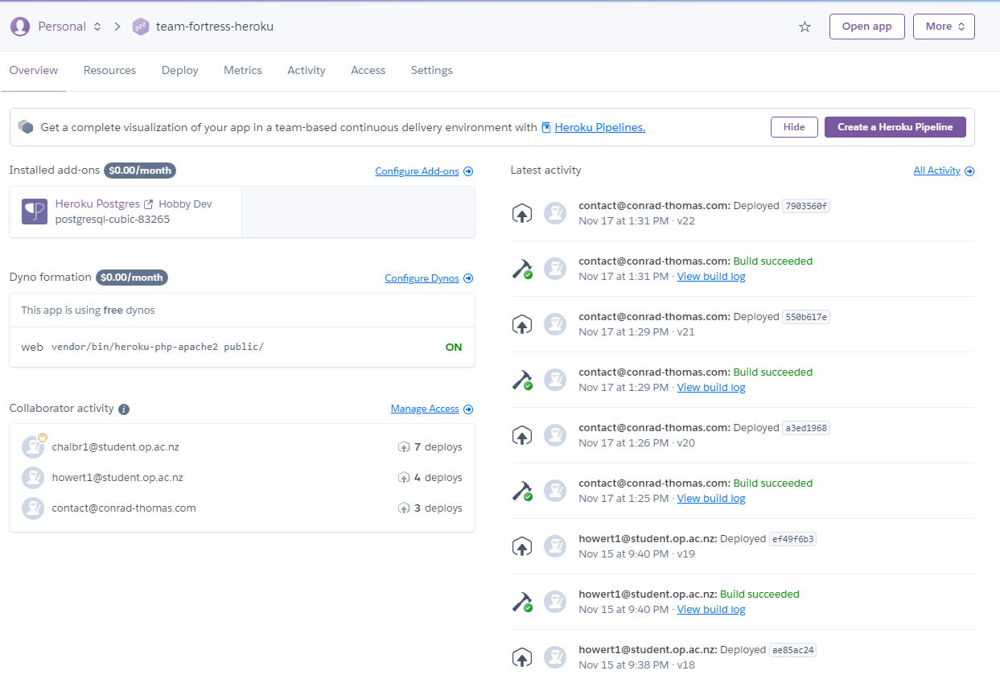

My task for this sprint was the live hosting of our project. This was a two stage process, first the hosting, then setting up the config for PostgresSQL. This project was time sensitive as I wanted the intial hosting completed as soon as possible to give us plenty of time to push the changes up to the live version. While I had done some heroku hosting before, this was my first time hosting a laravel app and so there was some learning required around that. This included things like the setting up of the custom config settings, and trouble shooting why the website was returning certain error codes. These were interesting challenges to over come as laravel likes to spread the required information for hosting across several pages to keep things fun. Once the website was hosted successfully, I communicated to my team mates that it was hosted and to let me know as soon as they had finished their features for the sprint so that we could get the heroku version as up to date as possible before the presentation.
This didnt take too long to get implemented as there were a couple different tutorials to follow that laid out what settings to change in the database file in order to succesfully get it running. The only problem I had getting post gres sql running was that the tutorial I intially choose to follow was outdated in some aspects so had incorrect syntax examples that made the database not load. Once the database was up and running, it was simple to bring in our existing migrations and seeders.
This sprint in terms of technical achievements was good, however I felt quite disappointed with our final product when we presented it. After the topic change, alot of features were lost and never got re-implemented into the final product. This has left the final product looking quite bare bones as most of the features for the second half of the semester were not what I would consider the core features of a car searching website.
I got the intial hosting for the website finished before any of my team members had finished their stories for the sprint, this meant that I didnt slow down the production pipeline as I was available to move their features to the live hosted page immediatly after they were finished. I finished as I started by completing all of my tickets before the end of the sprint.
I could have communicated with the client more this sprint, it became clear at the final presentation that he had wanted the earliest implemented features brought into the final product. Because we never asked if they wanted those features brought into the cars website from the games website, they werent implemented into the final product leaving it looking quite bare and missing CUD functionality.
Communication with the client should have been happening even more frequently than it was, if this had been implemented this sprint, we likely would have avoided the disappointment of the final product unveiling.
I didnt encounter any major barriers that stopped my work this week, largely the progress went smoothly and I completed all tasks in a timely manner.